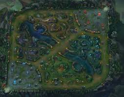
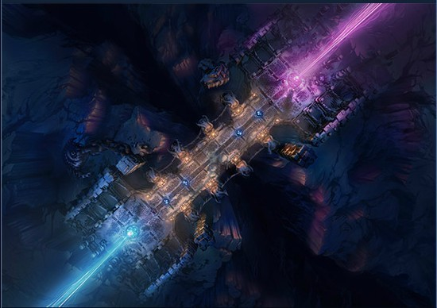

遊戲簡介
VIDEO
LOL(League of Legends)是一款由Riot Games開發且發行的5v5多人線上戰鬥遊戲(MOBA)， 《魔獸爭霸III：寒冰霸權》
中一個名為DotA第三方自定義地圖啟發而誕生，
遊戲玩法
在《英雄聯盟》中，每個玩家都會扮演一個召喚師，且操作擁有不同獨特能力的英雄。
遊戲地圖
《英雄聯盟》的主要地圖有2張，每一張都有目標和勝利條件，以及各自的道具。
召喚峽谷

召喚峽谷是《英雄聯盟》中最受歡迎的地圖。在這個地圖的模式裡，兩個隊伍各自有五名玩家，
咆嘯深淵

咆嘯深淵適用於大亂鬥(ARAM)的地圖，ARAM指的是「All Random All Mid」，指全部隨機全部中路(隨機單中)。
home